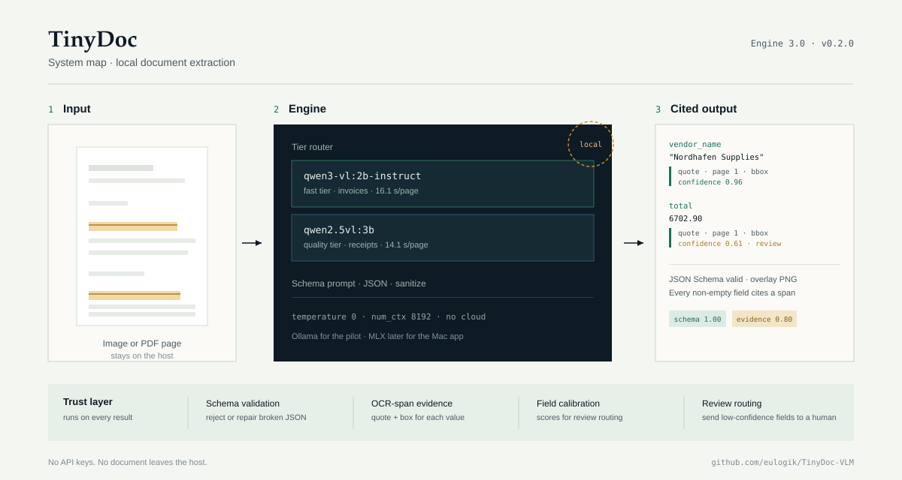
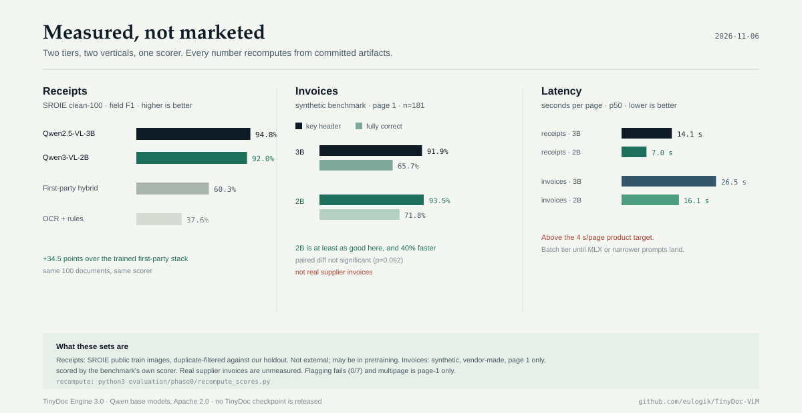
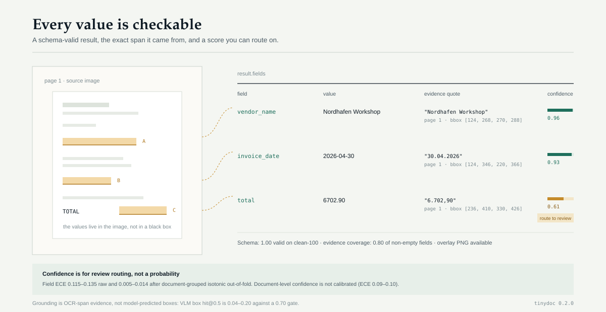

TinyDoc Engine 3.0 · v0.2.0
Document extraction you can check.
Receipts and invoices become schema-valid JSON, with the exact OCR span and a confidence score behind every field. Local Qwen VLMs. No API key, no cloud, no telemetry.
TinyDoc is an open-source Python SDK and CLI that turns receipt and invoice images into schema-validated JSON, with the exact source span and a confidence score attached to every field. It runs a local vision-language model through Ollama and adds JSON Schema validation, OCR-span evidence, and review routing. It is not a fine-tuned TinyDoc checkpoint: the reader is a third-party Qwen model and the product is the trust layer around it.
How it works
A local reader, then four checks that make the output usable.

- Schema validationReject or repair broken JSON before it reaches your code.
- OCR-span evidenceAlign RapidOCR word boxes to each field: quote, page, and bbox.
- Field confidenceCalibrated for review routing, not for probability claims.
- Review routingSend low-confidence fields to a human instead of silently accepting them.
What ships in every result
| Field | Value | Confidence |
|---|---|---|
company | Nordhafen Workshop | 0.96 |
date | 2026-04-30 | 0.93 |
total | 6702.90 | 0.61 |
Evidence coverage on clean-100 is 0.798 of non-empty fields. Bboxes are OCR spans, not model predictions.
Measured results
Two tiers, two verticals, one scorer. Every published number recomputes from committed artifacts.

| Benchmark | Metric | Score | Status |
|---|---|---|---|
| SROIE receipts — clean-100, Qwen2.5-VL-3B | Field F1 | 0.9475 | n=100 · schema 1.00 |
| SROIE receipts — clean-100, Qwen3-VL-2B-Instruct | Field F1 | 0.9200 | 2× faster |
| SROIE receipts — first-party hybrid v2 | Field F1 | 0.603 | superseded |
| SROIE receipts — PP-OCR + heuristics | Field F1 | 0.376 | baseline |
| SROIE receipts — Tesseract + regex | Field F1 | 0.227 | baseline |
| Invoice benchmark v1 — 181 synthetic invoices, page 1, 3B | Key-header | 91.9% | 65.7% fully correct |
| Invoice benchmark v1 — page 1, 2B | Key-header | 93.5% | 71.8% fully correct |
| Invoice multipage, all pages — 10 synthetic docs, 46 pages, 2B | Fully correct | 4/10 | 0/10 page 1 · 71.1% vs 63.3% key-header |
| Invoice multipage, page-wise — same 10 docs, 2B | Fully correct | 6/10 | 93.3% key-header · 0.848 line F1 · ~2× slower |
| Invoice multipage, page-wise + OCR totals — same 10 docs, 2B | Fully correct | 10/10 | 90/90 key fields · pipeline, not pure VLM · 95% CI 69–100% |
| DocVQA reading probe — 200 public images, 2B | ANLS | 0.829 | single-reference · not a leaderboard number |
| Invoice flags — inconsistent + multi-invoice | Recall | 0/7 | not usable |
| Evidence coverage — RapidOCR | Rate | 0.798 | gate 0.90 |
| VLM bbox grounding — hit@0.5 | 2B / 3B | 0.20 / 0.04 | gate 0.70 |
| CORD / real supplier invoices | — | — | not measured |
python3 evaluation/phase0/recompute_scores.py.
What you get back
Not just fields: the page, the span, and a score for every value.

Quick start
One pip install, one local model, one call.
# 1. install
pip install tinydoc==0.2.0
# 2. pull a local reader (choose one)
ollama pull qwen2.5vl:3b # quality
ollama pull qwen3-vl:2b-instruct # fast
# 3. extract
tinydoc extract ./receipts/ \
--engine ollama:qwen2.5vl:3b \
--out results.jsonl --overlay overlays/from tinydoc import ReceiptPipeline
pipe = ReceiptPipeline("ollama:qwen2.5vl:3b")
result = pipe.extract("receipt.jpg")
print(result.fields)
print(result.schema_valid)
for field in result.field_results:
print(field.name, field.value,
field.confidence)
print(field.evidence.quote,
field.evidence.bbox)Large scans: keep TINYDOC_OLLAMA_NUM_CTX=8192 (default). Do not send Ollama format:"json"; constrained decoding truncates long addresses.
Questions
Short answers, with the caveats attached.
What is TinyDoc?
TinyDoc is an open-source Python SDK and CLI that turns receipt and invoice images into schema-validated JSON, with exact OCR-span evidence and per-field confidence. It runs local Qwen2.5-VL-3B or Qwen3-VL-2B-Instruct models through Ollama. The SDK is Apache 2.0 and available as pip install tinydoc.
Does TinyDoc ship its own model?
No. The reader is a third-party Qwen vision-language model. TinyDoc adds schema prompts, JSON validation and salvage, OCR-span evidence, confidence, overlays, and the CLI/SDK. The first-party 256M and SmolVLM2 tracks were measured, failed to beat the free base model, and were closed.
Does it work on invoices?
On a synthetic public benchmark of 181 invoices (page 1 only), it reaches 91.9% key-header accuracy and 65.7% fully correct with the 3B, and 93.5% / 71.8% with the 2B. Real supplier invoices are unmeasured and flagging fails (0/7); multipage is a separate 10-document probe, not a shipped SDK path.
How well does it read documents?
On a 200-image public DocVQA subset (one question per image, 768 px mirror, one reference answer), Qwen3-VL-2B-Instruct scores 0.829 ANLS and 0.765 exact match with zero errors. Official DocVQA uses up to 10 references, so this single-reference number is not comparable to leaderboard scores; the set is public and may be in pretraining.
Does it handle multipage invoices?
The evaluation harness can send every page, or read one page per request and merge deterministically. On 10 synthetic multipage invoices (46 pages, 2B), all-pages gets 4/10 fully correct and 71.1% key-header, with two 8-page runaway failures; page-wise VLM gets 6/10 fully correct and 93.3% key-header. Adding deterministic reconciliation — last-page currency, arithmetic repairs, and OCR-read printed totals accepted only when subtotal + tax == total — reaches 10/10 on the nine key-header fields, with an exact 95% CI of 69.2–100% at n=10. That is a pipeline result, not a pure VLM score: line-item F1 is 0.848, all lines are right on 1/10, page-wise is ~2× slower, and the SDK extraction path is still single-image.
Does my data leave my machine?
No. Inference runs against a local Ollama server. There is no hosted API, no telemetry, and no API key in the SDK.
Is the confidence calibrated?
Field-level scores are usable for review routing after document-grouped isotonic out-of-fold calibration: ECE 0.005–0.014. Document-level confidence is not calibrated (ECE 0.09–0.10) and is not a probability. Treat every score as a routing signal, not a decision.
Can it predict bounding boxes?
It returns OCR-span boxes as page-derived provenance. VLM-predicted boxes were measured at hit@0.5 of 0.04–0.20 against a 0.70 gate, so they are not claimed or shipped.
How fast is it?
Median latency on an M4 through Ollama is 7.0 s (2B) and 14.1 s (3B) per receipt, and 16.1 s / 26.5 s per invoice. That is above the 4 s target; it is a batch tier until MLX or narrower prompts land.
What is the license?
The TinyDoc SDK is Apache 2.0. The Qwen base models are Apache 2.0; check their model cards for terms.
Read more
Source, evidence, and the path to a first-party adapter.